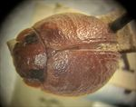
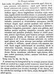

Click on images to enlarge

Fig. 1. Paropsis nervosa type specimen, lateral view
{kind=link}

Fig. 2. Paropsis nervosa type specimen, dorsal view
{kind=link}

Fig. 3. Paropsis nervosa, description
Name
Paropsis nervosa Clark, 1865
Corresponds to
No clear correspondence with any of the species codes, but clearly a bicolora-group member.
Diagnosis and Notes
Blackburn does not deal with P. nervosa except to mention in his description of P. vibex (Blackburn, 1897, p.180) that it is possible that his species is the same as P. nervosa (he had not seen any specimens of it). However, he considers it unlikely due to the fact that P. nervosa is described as having a black patch on on each side of the prothorax, though this is a feature that is quite variable within many members of the bicolora species group. The type specimen of T. nervosa is very similar in sculpture and markings to a typical Ta10. It is just slightly larger (6.1 mm, carded specimen, sex unknown), though may actually be slightly shorter if the pronotum is extended from the mesosternum (which is frequently the case in carded specimens). Clark gives its length as 2¾ lines (= 5.82 mm), which would still make it a rather large Ta10. It is probably more likely to be one of the other species in this group with a central transverse weal (such as Ta231 or Ta199).
Type specimen
Location: BMNH
Label data: /“TYPE”/ “W. Austral.”/ “67-56”/ “nervosa Clark”/.
Mounted on card, sex unknown; size: 6.1 (L) x 4.8 (W) x 2.8 (H) mm; A-A: 1.04 mm, HCE/BL: ~23.7% (estimated from photo of lateral view).
Elytra with transverse weal near middle, other transverse ridges are also present, verrucae are present in apical third; pronotum with a broad black band behind eyes, two black spots on head, a slight darkening above humeral callus.
Original description
Translation of original description (Figure 3) by ChatGPT, 04/2026:
Broadly oval, scarcely gibbous, adorned with transverse bands on the elytra, punctate, reddish-chestnut. Head near the labrum with a sub-transverse linear depression; unevenly rugose; with a sub-depressed black circular patch on each side of the middle; the labrum also black at the middle. Thorax three times broader than long; anterior angles rounded-obtuse and somewhat projecting, posterior angles rounded; sides rounded and finely margined; anterior margin broadly emarginate; with an obsolete longitudinal carina at the middle. Surface punctate and somewhat vermiculately rugose, with a large, completely quadrate black spot on each side between the middle and the margin, and within these spots the rugosity stronger and more distinct. Scutellum triangular, punctate. Elytra fairly gibbous, slightly broadened behind the middle; margins expanded; apex scarcely rounded but somewhat produced. Strongly and closely punctate, the punctures dark brownish; near the humeri with a single slightly raised tubercle on each side; along the sides and near the middle ornamented with two or three interrupted transverse bands; also with tubercles, not very numerous toward the apex but more numerous just behind the middle near the suture, arranged in two rows. In colour reddish-chestnut, with a large indefinite dark patch near the scutellum, another on the humeral tubercle, and again a somewhat obsolete reddish-brown band continuing from the humeri to the apex. Underside: prothorax yellow, metathorax reddish-yellow tinged with black, abdomen closely punctate and red; antennae reddish-yellow; legs yellowish-testaceous. Length 2¾ lines [~5.8 mm]; width 2⅕ lines [~4.7 mm].
References
Clark, H. 1865, "Descriptions of new Phytophaga from Western Australia", Transactions of the Entomological Society of London, ser. 2, vol. 2, no. 5, 401–421 (page 413).
Copyright © 2026. All rights reserved.